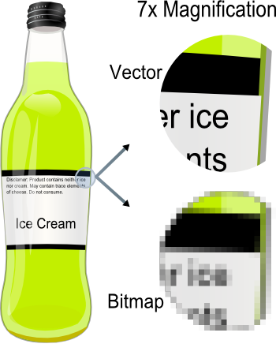

Digital bild
Digital bild är ett grafiskt objekt kodat i digital form. Det finns många olika typer av digitalt kodade bilder. Digitalt kodade bilder kan delas in i två stora huvudgrupper, vektoriserade bilder (vektorgrafik) eller punktuppbyggda bilder. Illustrationer gjorda i program som till exempel Adobe Illustrator är oftast av vektoriserad typ, medan bilder som är skapade/bearbetade i program som till exempel Adobe Photoshop alt. GIMP (http://www.gimp.org/) oftast är punktuppbyggda. Därefter kan punktuppbyggda bilder delas in i två undergrupper:
- Förstörande komprimering
- Icke-förstörande komprimering
Indelningen görs beroende på hur komprimeringen av bildinformationen görs. Bilder som sparas i bildformatet jpeg har en förstörande komprimering medan bilder som till exempel lagras som t ex Photoshop-filer i de flesta fall behåller kvalitén när de sparas. Därutöver är det möjligt att animera innehållet i vissa typer av filformat, till exempel GIF.
Digitala bildformat
Punktuppbyggda bildformat
Förstörande komprimering
- Filformatet använder sig av en komprimering som delvis förstör innehållet i den ursprungliga bilden. För varje gång man sparar om bilden förstörs den mer.
Icke-förstörande komprimering
- Portable Network Graphics, standarformatet för punktbaserade bilder på internet
- Formatet tillåter endast användandet av en begränsad färgpalett, ej lämplig för fotografiska bilder. Används ofta för animering
- (Photoshop-filer) - kan spara bilder utan kvalitetsförluster
- Kan använda sig av LZW-komprimering som är en icke-förstörande komprimeringsmetod
- Äldre format för bitmapbilder (okomprimerat)

Vektoriserade bildformat
- Standard för en textbaserad beskrivning av vektorbilder
FORTSÄTT MED BILDEN DU SPARAT
Bild: https://commons.wikimedia.org/wiki/File:VectorBitmapExample.png#/media/
File:VectorBitmapExample.png Licens: Public domain